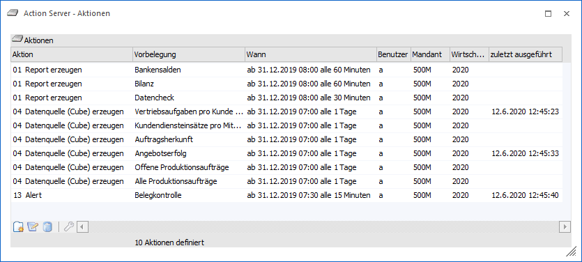
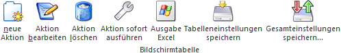
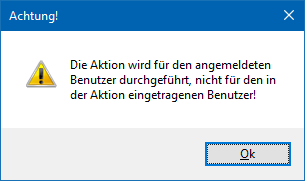
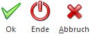

Im Menüpunkt
1 WinLine START
1 Action Server
1 Definition
können jene Aktionen definiert werden, die vom "Action Server" abgearbeitet werden sollen. Bei jeder Aktion kann hierbei festgelegt werden, ob die Aktion periodisch (alle x Sekunden, Minuten, Stunden, Woche etc.) oder einmalig durchgeführt werden soll.
So können z.B. Export/Import-Aufgaben im Sekundentakt angestoßen oder aber auch zeitaufwändige Reports während des Feierabends erstellt werden.

In der Tabelle werden alle definierten Aktionen mit den wichtigsten Informationen (Aktionstyp, Vorbelegung, Benutzer, Mandant, Jahr) dargestellt. Zusätzlich wird auch angezeigt, wann der Action Server-Eintrag zuletzt gestartet worden ist. Ist eine Aktion bereits beendet (erledigt), wird durch den Hinweis "Aktion beendet!" darauf hingewiesen.
Hinweis
Sollte der Action Server gerade aktiv sein, so wird die aktuelle ausgeführte Aktion grün unterlegt.
Die Anlage einer neuen Aktion bzw. das Editieren einer bestehenden Aktion geschieht in Form eines Assistenten:
ü Bereich "Benutzer und Mandant definieren"
ü Bereich "Intervall definieren"
Tabellenbuttons

Ø neue Aktion
Durch Anwahl des Buttons "neue Aktion" wird in die Assistenten gewechselt und eine neue Aktion für den Action Server definiert.
Ø Aktion bearbeiten
Wenn der Button "Aktion bearbeiten" gedrückt wird, dann können die Einstellungen der markierten Aktion editiert werden.
Hinweis
Aktion, welche gerade ausgeführt werden, können nicht bearbeitet werden. Soll die Verarbeitung abgebrochen werden, so kann dieses per Button "Aktion bearbeiten" + Shift-Taste erfolgen, wobei zunächst eine Abfrage erscheint.
Ø Aktion löschen
Durch Anwahl des Buttons wird die markierte Aktion gelöscht.
Ø Aktion sofort ausführen
Handelt es sich bei der ausgewählten Aktion um einen noch nicht abgeschlossenen / beendeten Eintrag, so kann jener durch Anwahl des Buttons "Aktion sofort ausführen" sofort ausgeführt werden (weitere fällige Aktionen werden dabei nicht berücksichtigt). Sollte die Aktion gerade ausgeführt oder bearbeitet werden, so wird eine entsprechende Hinweismeldung am Bildschirm ausgegeben.
Hinweis 1
Für die Abarbeitung der Aktion wird das Fenster "Action Server" geöffnet und abhängig vom aktuellen Mandanten und dem Mandanten der Aktion ein Mandantenwechsel durchgeführt (nach dem Abschluss der Aktion wird in den ursprünglichen Mandanten zurückgewechselt). Im Anschluss der Durchführung wird das Fenster "Action Server" automatisch geschlossen und ein Protokoll am Bildschirm ausgegeben (die Ausgabe beschränkt sich hierbei auf das aktuelle (System-) Datum und den aktuellen Benutzer).
Achtung
Wenn sich der aktuell eingeloggte Benutzer von jenem der Aktion unterscheidet, so wird die Aktion im Kontext des eingeloggten Benutzers durchgeführt. Hierauf wird durch folgende Meldung hingewiesen:

Ø Ausgabe Excel
Durch Anwahl des Buttons "Ausgabe Excel" wird der Inhalt der Tabelle an Microsoft Excel übergeben.
Ø Tabelleneinstellungen speichern
Die Spalten einer Tabelle können grundsätzlich an beliebige Positionen verschoben, bzw. in der Breite entsprechend angepasst werden. Durch Anwahl des Buttons "Tabelleneinstellungen speichern" werden die Einstellungen benutzerspezifisch gespeichert und bei dem nächsten Aufruf des Programmpunktes wieder vorgeschlagen.
Ø Gesamteinstellungen speichern
Im Gegensatz zu "Tabelleneinstellungen speichern" können mit "Gesamteinstellungen speichern" mehrere Tabellenaufbauten gespeichert und nach Wunsch geladen werden. Zusätzlich werden Sonderfunktionen der Tabelle (z.B. "Spalte gruppieren") ebenfalls bei der Speicherung bedacht.
Buttons

Ø Ok
Durch Drücken des Buttons "Ok" bzw. der Taste F5, welches nur im letzten Schritt des Assistenten zur Verfügung steht (Bereich "Intervall definieren"), wird die Aktion abgespeichert.
Ø Ende
Durch Anwahl des Buttons "Ende" bzw. der Taste ESC wird der Assistent geschlossen und alle nicht gespeicherten Eingaben verworfen.
Ø Abbruch
Durch Drücken des Abbruch-Buttons - dies kann in jedem Schritt des Assistenten erfolgen - wird zurück ins Auswahlfenster gewechselt ohne irgendeine Einstellung zu speichern bzw. zu übernehmen.
Ø Zurück / Vor
Mit Hilfe der Buttons "Vor" und "Zurück" kann zwischen den unterschiedlichen Schritten des Assistenten gewechselt werden.